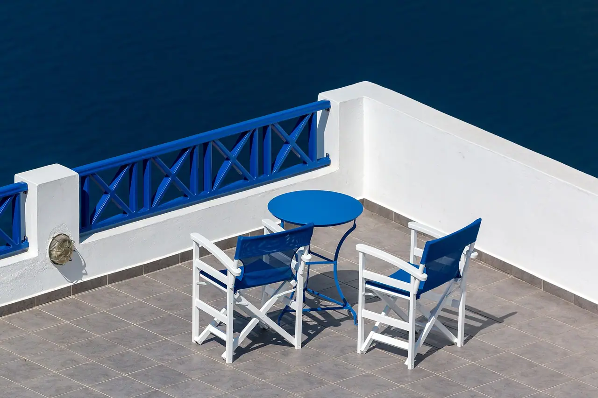
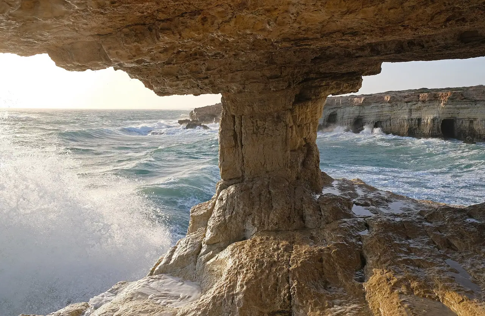
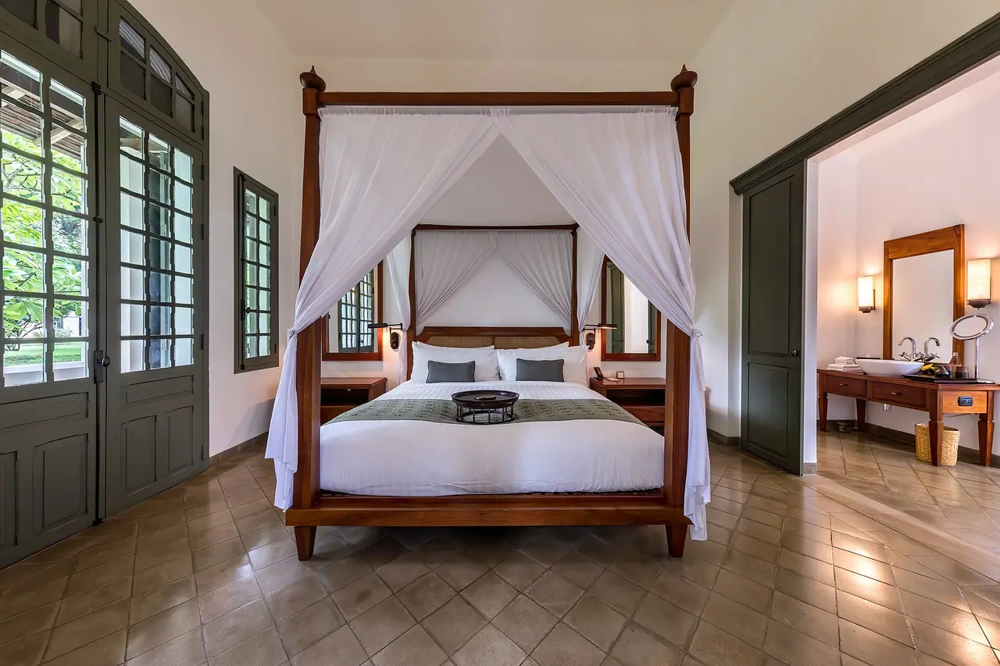
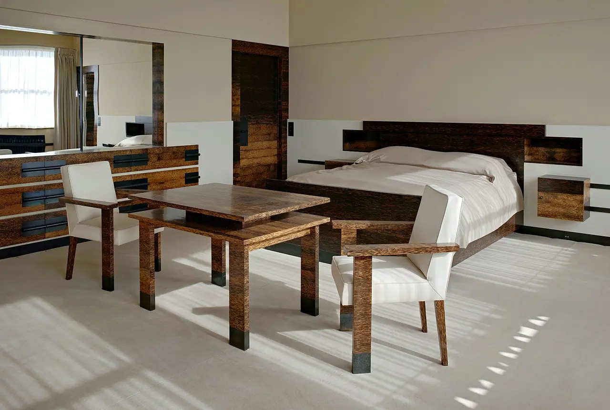
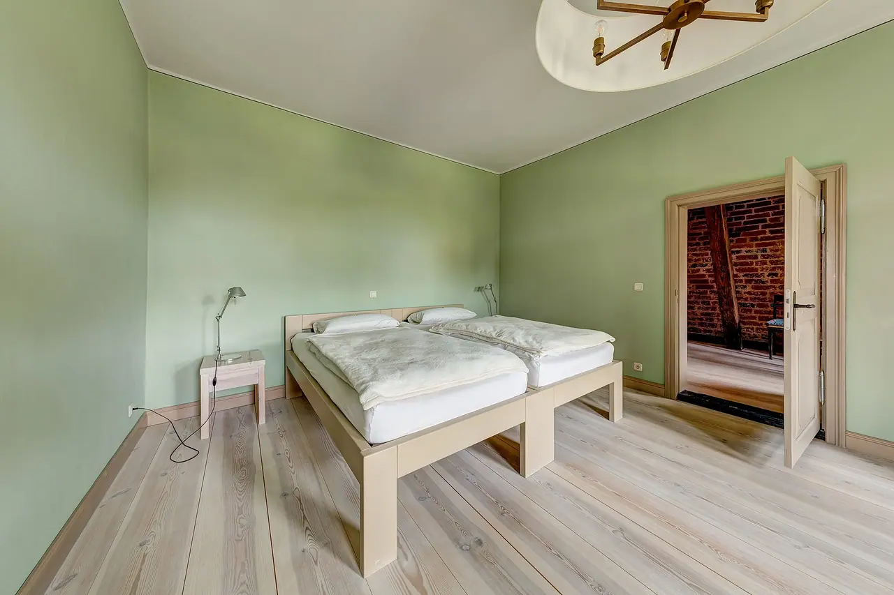

Sea suite
Top terrace, with shutters that fold back to the sea.
- Sleeps two
- Four-poster bed
- A terrace of its own
A stone house in an olive grove on the Albanian Riviera.



Olive terraces fall from the Llogara Pass to the Ionian Sea, and the house sits halfway down.
Dhërmi, Vlorë County
Three rooms, each with a door to the garden. Breakfast is bread, figs and village cheese on the terrace until eleven.
Each opens onto the olive grove. Choose a strip to see it.
Top terrace, with shutters that fold back to the sea.

Morning sun and the olive grove outside.

Two beds, for friends travelling together.
Coves, a mountain pass and two castles.
| Place | What’s there | From here |
|---|---|---|
| Dhërmi beach | Pebbles and clear water | 10 min walk |
| Gjipe | A cove at a canyon’s end | 15 min drive, 30 min walk |
| Llogara Pass | Pine forest over the coast | 25 min drive |
| Himarë | Old town, castle, harbour | 30 min drive |
| Porto Palermo | A fortress on a peninsula | 45 min drive |
Times are approximate.
The water stays clear and warm enough to swim from May to October.
Ask us to book a driver when you send your dates.
We reply by email with the free rooms and the rate.